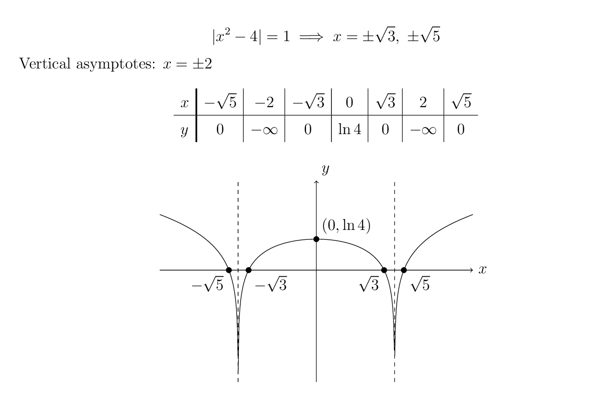

(i) Let \(\displaystyle u=2-x,\ du=-dx\)
\[
\begin{aligned}
\int \ln(2-x)\,dx
&=-\int \ln u\,du\\
&=-(u\ln u-u)+C\\
&=-(2-x)\ln(2-x)+(2-x)+C
\end{aligned}
\]
(ii)
\[
y=\ln|x^2-4|
\]
\[
|x^2-4|=1\implies x=\pm\sqrt3,\ \pm\sqrt5
\]
Vertical asymptotes: \(\displaystyle x=\pm2\)

(iii) In the first quadrant,
\[
y=\ln(4-x^2)
\]
The curve meets the positive \(x\)-axis when
\[
\ln(4-x^2)=0\implies x=\sqrt3
\]
\[
\begin{aligned}
\text{Area}
&=\int_0^{\sqrt3}\ln(4-x^2)\,dx\\
&=\Big[x\ln(4-x^2)\Big]_0^{\sqrt3}
+2\int_0^{\sqrt3}\frac{x^2}{4-x^2}\,dx\\
&=2\int_0^{\sqrt3}\left(-1+\frac4{4-x^2}\right)\,dx\\
&=\left[-2x+2\ln\left(\frac{2+x}{2-x}\right)\right]_0^{\sqrt3}\\
&=-2\sqrt3+2\ln\left(\frac{2+\sqrt3}{2-\sqrt3}\right)\\
&=-2\sqrt3+4\ln\left(2+\sqrt3\right)
\end{aligned}
\]
(iv)
\[
\begin{aligned}
\int_0^2 \ln(4-x^2)\,dx
&=\Big[-(2-x)\ln(2-x)+(2+x)\ln(2+x)-2x\Big]_0^2\\
&=4\ln4-4
\end{aligned}
\]
\(\because \ln(4-x^2)\geq 0\) on \(\displaystyle 0\leq x\leq\sqrt3\) and \(\displaystyle \ln(4-x^2)<0\) on \(\displaystyle \sqrt3<x<2\),
\[
\begin{aligned}
\therefore \text{Area}
&=2\left(\int_0^{\sqrt3}\ln(4-x^2)\,dx-\int_{\sqrt3}^{2}\ln(4-x^2)\,dx\right)\\
&=2\left(2\int_0^{\sqrt3}\ln(4-x^2)\,dx-\int_0^2\ln(4-x^2)\,dx\right)\\
&=4\left(4\ln(2+\sqrt3)-2\sqrt3\right)-2(4\ln4-4)\\
&=8+16\ln(2+\sqrt3)-16\ln2-8\sqrt3
\end{aligned}
\]